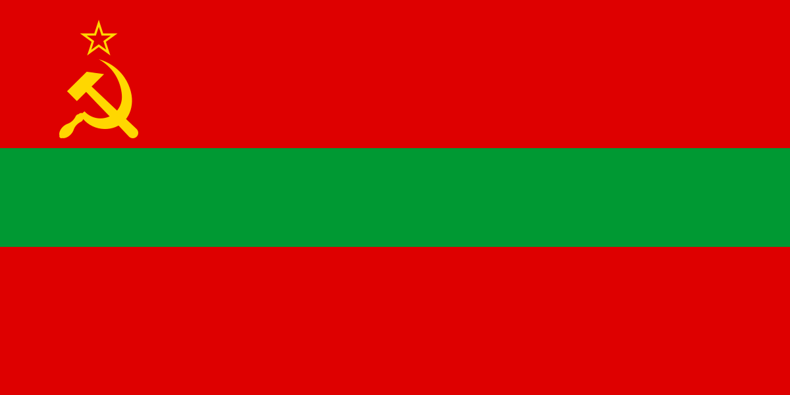
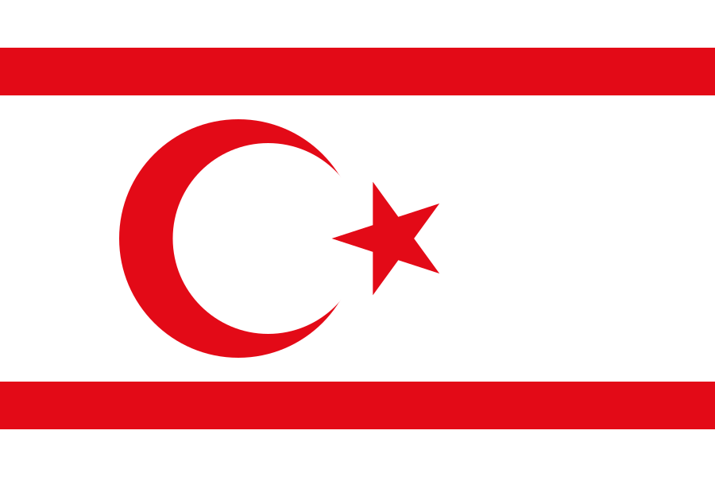

matesu
são paulo · desde 2015
olá! eu sou matesu e eu provavelmente estou:
matesu
são paulo · desde 2015
olá! eu sou matesu e eu provavelmente estou:
construindo coisas
todos os projetos
passe o mouse · clique para abrirarquivo
visuais
design · programação · som · imagem · direçãomatesuposting
caderno de alguma coisa regurgitação.
estive aqui
A-Z · artistas e projetos
você já me viu por aí?
Matesu, produtor músical e engenheiro de áudio desde 2015, transita entre as muitas facetas da música eletrônica de forma técnica: sua sonoridade é sempre acompanhada de graus de experimentação e turbulência, seja de maneira introspectiva ou não. Também acompanha e participa no desenvolvimento de diversos nichos no substrato musical brasileiro, trabalhando entre o jungle e o UK Garage, do techno ao ambiente.
Inserido no circuito underground eletrônico paulistano, já colaborou com figuras relevantes dentro e fora do país ao longo do tempo: zonaEXP., SPEEDTEST, Leigo Records, Kenyon Sound e HyperX, além de plays na Rinse FM, NTS, Dekmantel, HÖR, Function!, Veneno, Foundation FM e Aaja Music. É co-fundador do selo bloodworm trax e integrante do coletivo artístico BLACKMESA.
- produção cultural
- dj
- produção e mixagem
- design gráfico
- desenvolvimento
- fotografia
- direção criativa
Estou com agendas fechadas, mas qualquer ideia de trabalho é só me alcançar em contact@matesu.me.



incident responder @ Akamai Technologies
sei todas as bandeiras: estados nacionais, reconhecidos ou não pela ONU.
fascinado por incidentes radiológicos. relatório da IAEA sobre o acidente de Lia, Geórgia.
gosto de minecraft 1.5.2 · web 2.0, pré-2013.
Disclaimer: As opiniões, posicionamentos e manifestações publicados neste perfil são de caráter estritamente pessoal e não representam, necessariamente, as opiniões, posições ou valores da empresa à qual estou profissionalmente vinculado, de seus clientes, parceiros ou afiliadas. As publicações são feitas em caráter individual e não constituem declarações oficiais em nome de qualquer organização com a qual mantenho vínculo profissional.